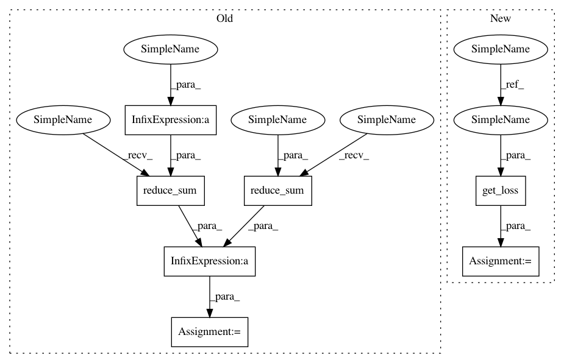

6aa255e3d273a78612a68e648a761f3d830e319c,thumt/models/transformer.py,,model_graph,#Any#Any#Any#Any#,169
Before Change
)
ce = tf.reshape(ce, tf.shape(tgt_seq))
loss = tf.reduce_sum(ce * tgt_mask) / tf.reduce_sum(tgt_mask)
return loss
After Change
src_mask = tf.sequence_mask(src_len,
maxlen=tf.shape(features["source"])[1],
dtype=tf.float32)
tgt_mask = tf.sequence_mask(tgt_len,
maxlen=tf.shape(features["target"])[1],
dtype=tf.float32)
src_embedding, tgt_embedding, weights = get_weights(params)
bias = tf.get_variable("bias", [hidden_size])
// id => embedding
// src_seq: [batch, max_src_length]
// tgt_seq: [batch, max_tgt_length]
inputs = tf.gather(src_embedding, src_seq) * (hidden_size ** 0.5)
targets = tf.gather(tgt_embedding, tgt_seq) * (hidden_size ** 0.5)
inputs = inputs * tf.expand_dims(src_mask, -1)
targets = targets * tf.expand_dims(tgt_mask, -1)
// Preparing encoder & decoder input
encoder_input = tf.nn.bias_add(inputs, bias)
encoder_input = layers.attention.add_timing_signal(encoder_input)
enc_attn_bias = layers.attention.attention_bias(src_mask, "masking")
dec_attn_bias = layers.attention.attention_bias(tf.shape(targets)[1],
"casual")
// Shift left
decoder_input = tf.pad(targets, [[0, 0], [1, 0], [0, 0]])[:, :-1, :]
decoder_input = layers.attention.add_timing_signal(decoder_input)
if params.residual_dropout:
keep_prob = 1.0 - params.residual_dropout
encoder_input = tf.nn.dropout(encoder_input, keep_prob)
decoder_input = tf.nn.dropout(decoder_input, keep_prob)
encoder_output = transformer_encoder(encoder_input, enc_attn_bias, params)
decoder_output = transformer_decoder(decoder_input, encoder_output,
dec_attn_bias, enc_attn_bias, params)
// inference mode, take the last position
if mode == "infer":
decoder_output = decoder_output[:, -1, :]
logits = tf.matmul(decoder_output, weights, False, True)
return logits
// [batch, length, channel] => [batch * length, vocab_size]
decoder_output = tf.reshape(decoder_output, [-1, hidden_size])
logits = tf.matmul(decoder_output, weights, False, True)
// label smoothing
ce = layers.nn.smoothed_softmax_cross_entropy_with_logits(
logits=logits,
labels=labels,
smoothing=params.label_smoothing,
normalize=True
)
ce = tf.reshape(ce, tf.shape(tgt_seq))
loss = get_loss(features, params, ce, tgt_mask)
return loss
In pattern: SUPERPATTERN
Frequency: 3
Non-data size: 7
Instances
Project Name: THUNLP-MT/THUMT
Commit Name: 6aa255e3d273a78612a68e648a761f3d830e319c
Time: 2017-11-17
Author: grit31@126.com
File Name: thumt/models/transformer.py
Class Name:
Method Name: model_graph
Project Name: THUNLP-MT/THUMT
Commit Name: 6aa255e3d273a78612a68e648a761f3d830e319c
Time: 2017-11-17
Author: grit31@126.com
File Name: thumt/models/seq2seq.py
Class Name:
Method Name: model_graph
Project Name: THUNLP-MT/THUMT
Commit Name: 6aa255e3d273a78612a68e648a761f3d830e319c
Time: 2017-11-17
Author: grit31@126.com
File Name: thumt/models/rnnsearch.py
Class Name:
Method Name: model_graph